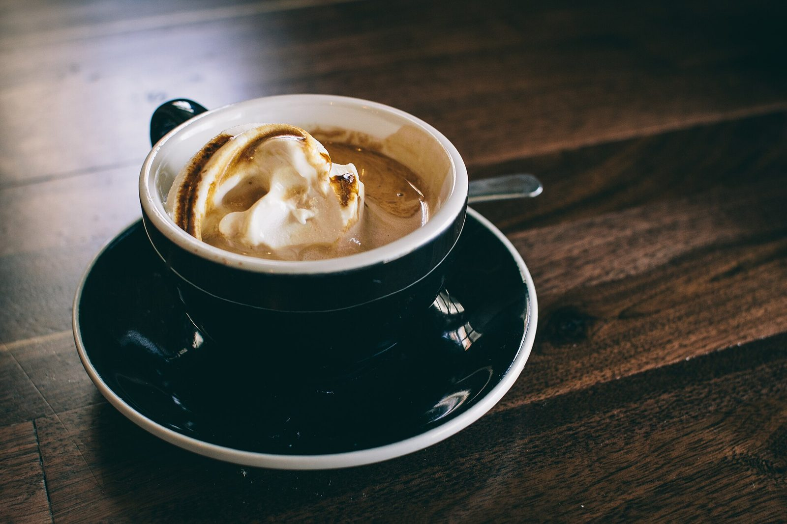
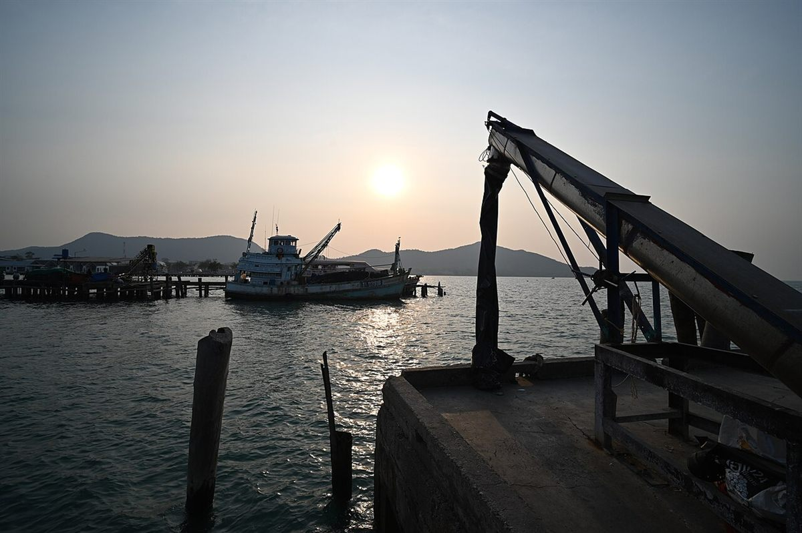
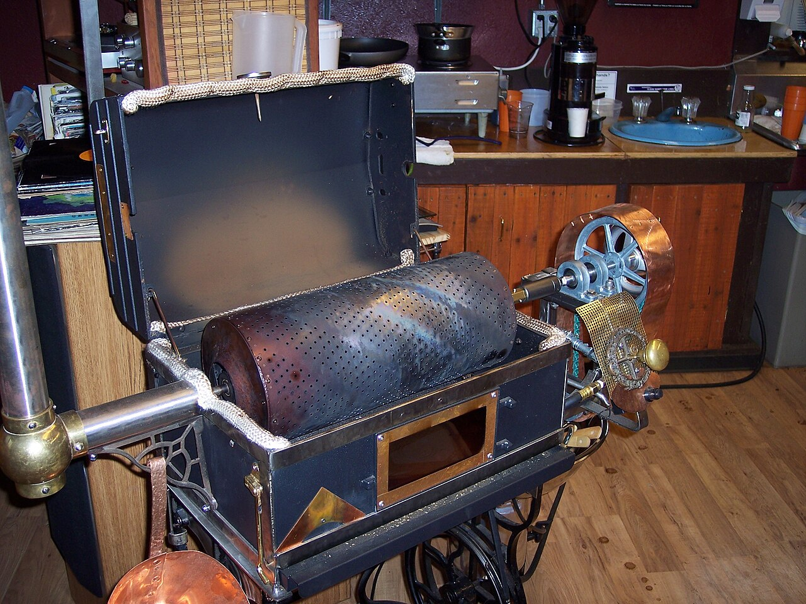
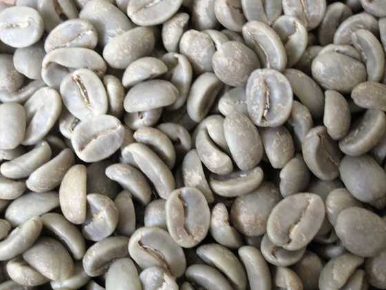
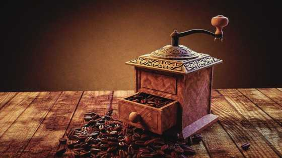
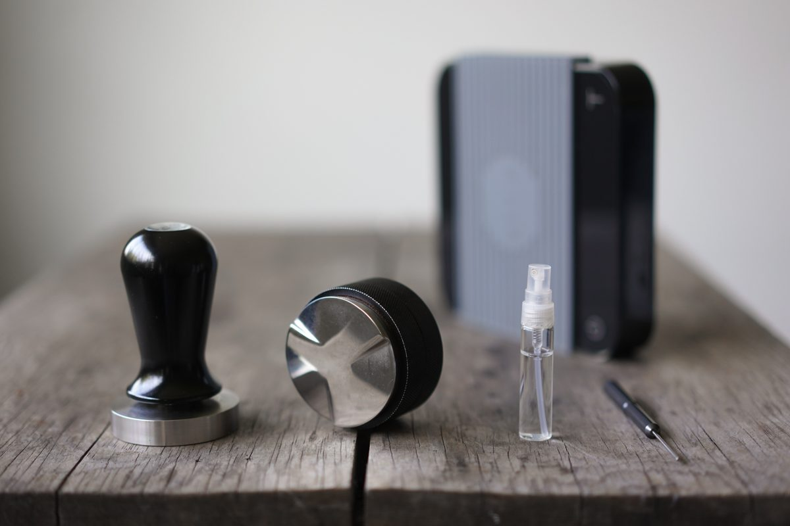
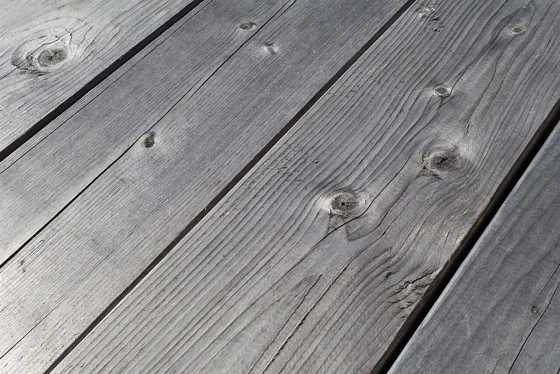
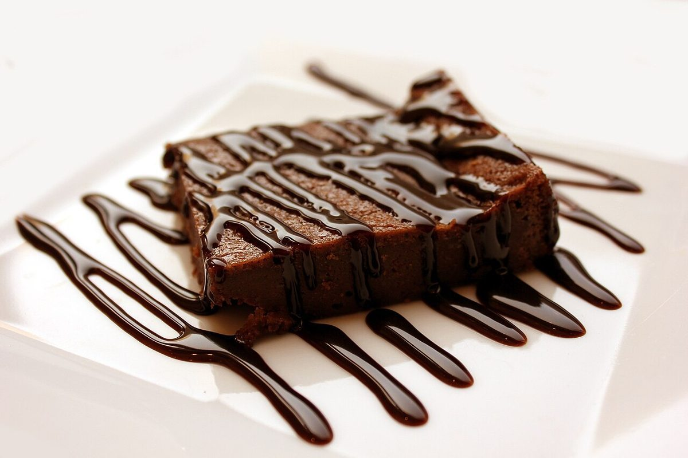
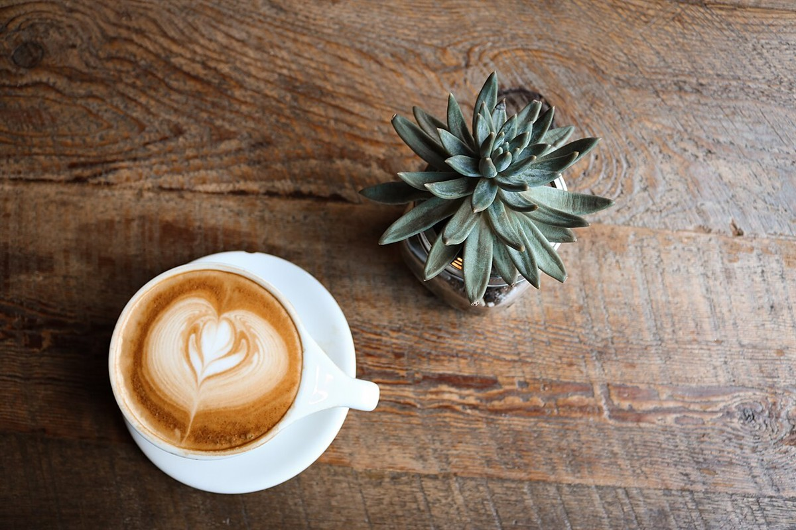
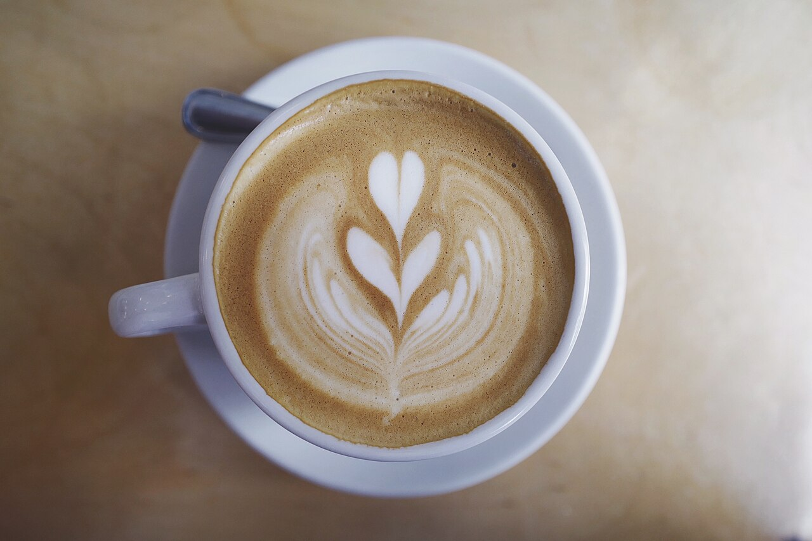

エスプレッソアフォガート
エスプレッソにアイスをのせた一品として紹介されています。
価格 準備中

ABOUT
mill coffeestand(ミルコーヒースタンド)は、佐世保市東浜町の、水産加工会社が並ぶエリアの建物2階にある自家焙煎コーヒーのお店です。2024年7月29日にオープンしたと、地元メディアで紹介されています。
店主は子育て中のお母さん。「子育て中の方も気軽に来られる場所にしたい」という思いで店づくりをしたと紹介されており、ベビーベッドとソファ席が用意されているそうです。
店内はイギリスをイメージした、木の温もりと遊び心のある空間。鮮やかな黄色の焙煎機があり、カウンターの窓からは東浜の風景が見えると紹介されています。

出典: 佐世保の情報サイト「sasebo99」、「safee nagasaki」(2024年7月の開店紹介)。店名「mill」の意味は確認できていません。
COFFEE

コーヒーは深煎りでありながらすっきりとした味わいで、ほのかなフルーティーさが特徴と紹介されています。豆は店で焙煎しています。
豆の種類・焙煎度の詳細は準備中です。





MENU
紹介記事などで確認できたものを挙げます。内容・価格・提供状況は変わることがあるため、最新はInstagramをご覧ください。

エスプレッソにアイスをのせた一品として紹介されています。
価格 準備中

店の焼き菓子として案内されています。
価格 準備中

店主考案のスパイス好きらしい一品として、開店時に紹介されました。
価格 準備中

深煎りですっきりとした自家焙煎コーヒー。
価格 準備中

自家焙煎豆でいれる一杯。
価格 準備中
上の写真はイメージで、実際の商品とは異なります。
VOICE
以下は制作側が作成した「イメージ例」です。実在のお客様の声ではありません。
窓の外に海が見えて、ゆっくりコーヒーを飲めそうなお店です。
小さな子どもがいても入りやすい雰囲気だと嬉しいですね。
深煎りのコーヒーと甘いものを合わせて、一息つきたくなります。
ACCESS
| 所在地 | 〒857-1172 長崎県佐世保市東浜町687-30(建物2階と紹介されています) |
|---|---|
| 電話 | 準備中 |
| 営業時間 | 準備中 |
| 定休日 | 準備中 |
| SNS | Instagram @mill_coffeestand(最新の営業情報はこちら) |
一部の写真はフリー素材のイメージです。実際の店内・商品写真は貴店ご提供のものに差し替えます